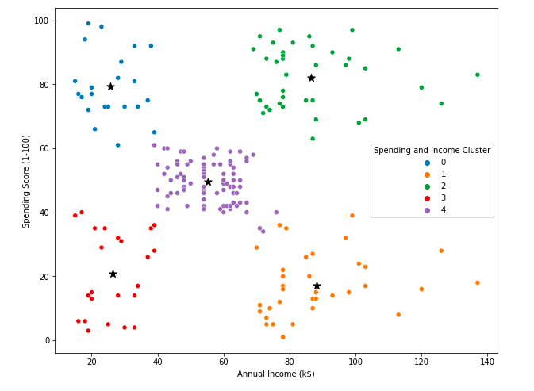
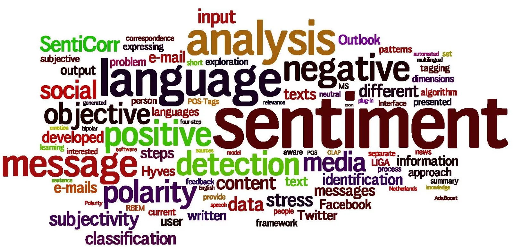
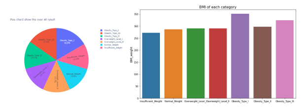
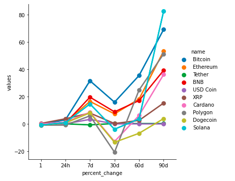

In this project, I conducted Exploratory Data Analysis (EDA) using Python to quickly analyze and understand the dataset, extracting insights for further analysis. I also employed Sklearn clustering to generate distinct customer segments based on their data, which could be utilized for effective marketing and targeted strategies. To categorize these segments based on various characteristics and behaviors, I utilized data analysis and visualization techniques using Matplotlib.
The objective of this project was to analyze and categorize consumer groups based on their shopping habits. This allowed for a better understanding of customer behavior and helped to optimize marketing strategies and business outcomes. By identifying distinct segments within the customer base, targeted marketing campaigns could be designed to cater to each group's preferences and interests.
Overall, this project demonstrated the importance of leveraging data analysis techniques to better understand customer behavior and preferences. By using data-driven insights, businesses can create more effective marketing strategies, leading to increased customer satisfaction and business success.

I spearheaded the creation of a comprehensive hotel booking database aimed at facilitating efficient data-driven decision-making. In order to achieve this, I developed a SQL query using DAX to enable the retrieval, updating, or deletion of data based on specific criteria. To enhance data visualization and analysis, I also integrated the database with Power BI and configured it for interactive and efficient data display. By leveraging Power BI, I was able to synthesize key insights from the data and present them in a visually compelling and concise manner. The project yielded significant impacts on business performance and decision-making by analyzing hotel booking data. Through this effort, informed decisions can be made based on reliable data, resulting in enhanced efficiency, streamlined operations, and improved customer satisfaction.

In this project, we conducted a sentiment analysis of British Airways' customer reviews, utilizing Python to scrape and analyze 1000 reviews from the Skytrax website. The data was cleaned and prepared for analysis, allowing us to uncover valuable insights into customer sentiment. Using word cloud, I conducted text analysis to visually present the most common themes and terms in the reviews. The analysis identified areas for improvement, which provided British Airways with actionable steps to enhance their customer experience and increase satisfaction.
This project demonstrates the value of sentiment analysis in understanding customer feedback and improving overall customer experience. By leveraging the power of data analysis, companies like British Airways can identify areas of improvement and take meaningful steps towards enhancing customer satisfaction, ultimately leading to greater customer loyalty and business success.

In my project, I utilized Applied Python and statistical analysis techniques to investigate the impact of alcohol and family history on obesity. I collected and analyzed a total of 2,111 datasets and employed various descriptive statistical methods to obtain insights into the data. Using the pandas and matplotlib libraries, I was able to visualize the data and extract useful information from it. Additionally, I conducted multiple regression analysis using statsmodels and utilized the sklearn library to operate supervised machine learning models to predict individual outcomes.
Through the machine learning models, I was able to classify individuals as either healthy or unhealthy based on their family history and alcohol consumption. This analysis revealed significant insights into the relationship between alcohol, family history, and obesity. The findings of the study could be used to develop effective public health policies and help individuals make informed decisions about their health.
Overall, my project demonstrated how the combination of Applied Python and statistical analysis can be leveraged to extract valuable insights from large datasets, and could be used to inform decision-making in various fields.

This project involves automating the process of pulling data from a cryptocurrency website's API using Python. The aim is to streamline the data collection process and ensure accuracy in the results. Additionally, the data is cleaned up to remove any discrepancies or inaccuracies, which further enhances the data's reliability.
After the data is cleaned and structured, we then create visualizations to help analyze the data more effectively. These visualizations are designed to provide insight into key metrics and trends in the data, making it easier to identify patterns and draw conclusions. The visualizations also serve as a means of validating the accuracy and consistency of the data collected.
Overall, this project aims to simplify the data collection process and ensure that the data collected is of high quality. The automation of data collection and cleaning, along with the use of visualizations, helps to streamline the analysis process and enable more accurate insights.

I utilized JOIN and VIEW queries in SQL to extract data from eight related tables in the Nashville real estate database. Once the data was extracted, I cleaned and transformed it using aggregating and filtering functions to improve its quality and accuracy. To derive valuable business insights for better sales and real estate investment decisions, I employed Power BI. I created various data visualizations to effectively communicate the results, which helped stakeholders make informed decisions and increased investment. Overall, the use of SQL and Power BI allowed me to gather and analyze vast amounts of data, and translate it into clear and actionable insights for the real estate industry.
I conducted a thorough analysis of Airbnb housing trends in a particular city using Tableau dashboards. The study explored various factors such as location, price, amenities, and customer ratings to gain a deeper understanding of the factors that drive Airbnb rental rates and customer satisfaction in this region. The project's primary objective was to create interactive dashboards that would assist stakeholders, including property owners and renters, in making data-driven decisions about Airbnb rental properties in the city. The project yielded valuable insights into the Airbnb rental market in the city and showcased the effectiveness of Tableau in analyzing complex data and creating interactive dashboards that enable stakeholders to make informed decisions based on data-driven insights. Overall, this project highlights the importance of utilizing data analysis tools and techniques to gain valuable insights into trends and behaviors in the rental property market.